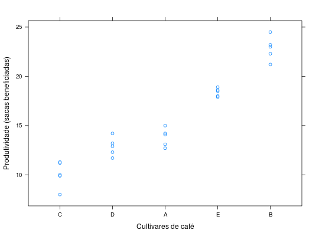

Experimento de competição de cultivares de café instalado em delineamento quadrado latino.
Um data.frame com 25 observações e 4 variáveis, em que
linhacoluncultprodBARROS; DIAS (2009), Exercício 10, Cap. 9, pág. 261.
library(lattice) data(DiasEx9.6.10)#> Warning: data set ‘DiasEx9.6.10’ not foundstr(DiasEx9.6.10)#> 'data.frame': 25 obs. of 4 variables: #> $ linha: Factor w/ 5 levels "1","2","3","4",..: 1 1 1 1 1 2 2 2 2 2 ... #> $ colun: Factor w/ 5 levels "1","2","3","4",..: 1 2 3 4 5 1 2 3 4 5 ... #> $ cult : Factor w/ 5 levels "A","B","C","D",..: 1 4 2 3 5 3 5 4 2 1 ... #> $ prod : num 13.1 13.2 24.5 11.3 18.5 10 18.9 14.2 23 15 ...xtabs(~linha + colun, data = DiasEx9.6.10)#> colun #> linha 1 2 3 4 5 #> 1 1 1 1 1 1 #> 2 1 1 1 1 1 #> 3 1 1 1 1 1 #> 4 1 1 1 1 1 #> 5 1 1 1 1 1xtabs(~cult, data = DiasEx9.6.10)#> cult #> A B C D E #> 5 5 5 5 5reshape::cast(data = DiasEx9.6.10, formula = linha ~ colun, value = "cult")#> linha 1 2 3 4 5 #> 1 1 A D B C E #> 2 2 C E D B A #> 3 3 E B C A D #> 4 4 B A E D C #> 5 5 D C A E Bxyplot(prod ~ reorder(cult, prod), data = DiasEx9.6.10, xlab = "Cultivares de café", ylab = "Produtividade (sacas beneficiadas)")